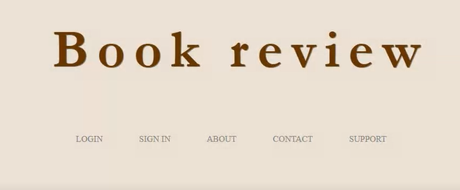

Timofte Claudiu/Antal Cosmin/Trefas Denis
https://github.com/cltty/BoRe
Scopul acestui manual este de a familiariza utilizatorii cu facilitățile oferite de aplicație și modul de utilizare a acesteia.
Aplicația vine în ajutorul oricărui doritor de lectura, în vedearea oferirii informațiilor privitoare la cărți și posibilității expunerii opiniilor,astfel putand gasi o carte potrivita.
Pentru a ajunge in pagina de inregistrare trebuie sa se selecteze butonul sign in din pagina default
După completarea infomațiilor și verificarea corectitudinii acestora, se va apăsa butonul de înregistare pentru ca noul cont să fie creat și să poată fi folosit.
In cazul completarii corecte ,sa va afisa un mesaj de confirmare si utilizatorul va fi redirectionat pe pagina de log in
Autentificarea se va face folosind numele și parola completate la secțiunea de înregistrare.
In cazul in care datele nu au fost introduse corect se va afisa unmesaj de eroare.
In cazul in care datele au fost completate corect,dupa apasarea butonului de log in , uilizatorul va fi redirectionat pe homepage(pagina principala).
Din pagina principala ,utilizatotul are mai multe opitiuni.
In sectiunea din stanga, utilizatorului ii este permis sa veda despre ce carti vorbesc ceilalti utilizatori prin optiunea "what is everyone reading"
De asemenea acesta se poate decide in privinta unei carti pe baza optiunii "want to read" sau se poate autoprovoca propunandu-si un anumit numar de carti de citit in 2020 prin optiunea "Challange yourself".Ceilalti utilizatori vor fi notificati in privinta acestor fapte.
In sectiunea centrala , utilizatorul poate adauga un review prin optiunea "add a review" si va fi redirectionat catre o pagina pe care trebuie sa completeze informatii specifice.
Pentru a face recenzia publica utilizatorul trebuie sa apese pe butonul submit, dar in cazul in care nu doreste recenzarea unei carti, are butonl "go back" la indemana.
Utliziatorul poate modifica o anumita recenzie sau poate actualiza numarul de pagini citite prin optiunea "Changed your opinion?".Aceasta va redirectiona utilizatorul pe o pagina in care sunt afisate toate cartile recenzate de acesta.Poate modifica recenzia prin apasarea butonului "Edit".
In sectiunea din dreapta se afla un flux de stiri divers pe care utilizatorul in poate accesa apasand pe stire.
Bara de navigare prezinta si ea optiuni permise dupa logare.
Butonul "My Books" redirectioneaza utilizatorul pe lista de carti pe care acesta ne a recenzat.
Butonul "Community" redirectioneaza utilizatorul pe o pagina cu rol de news feed.Aici ,acesta poate vedea activitatile celorlalti utilizatori.
Butonul de chat se afla in partea dreapta a barei de navigare si redirectioneaza utlizatorul pe un chat global unde poate purta conversatii cu alti utilizatori.
Se face accesand butonul profile din dreapta barei de navigare.Aceasta va deschide o pagina din care utilizatorul va avea optiunea logout.
Dupa aceasta utilizatorul va fi directionat catre pagina default.